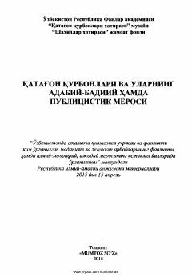

QQStalincha qatag'on qurbonlari va ularning ilmiy-adabiy merosiga bag'ishlangan ilmiy-amaliy anjuman materiallari.
Ushbu risola O'zbekistonda stalincha qatag'onlarga uchragan va faoliyati kam o'rganilgan fan, madaniyat va jamoat arboblarining ilmiy-ma'rifiy hamda ijodiy merosiga bag'ishlangan. To'plamda Tavallo, G'ozi Yunus, Ismoil Obidov, Sanjar Siddiq kabi qatag'on qurbonlarining hayoti va asarlari haqidagi ilmiy maqolalar o'rin olgan.